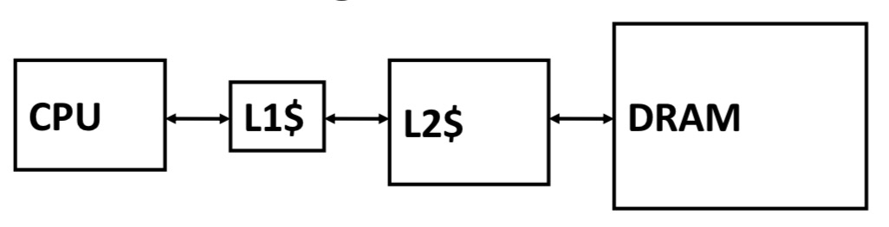
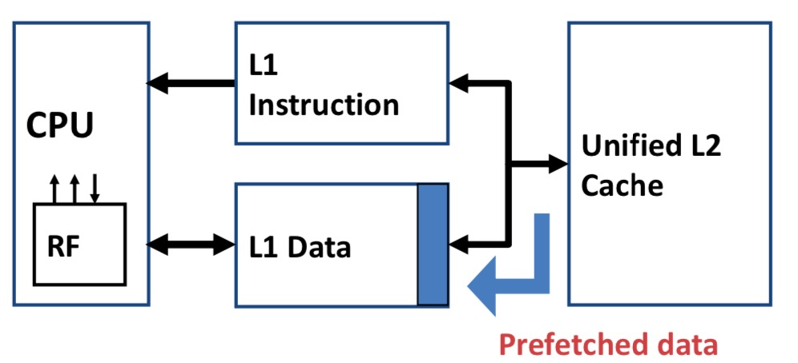
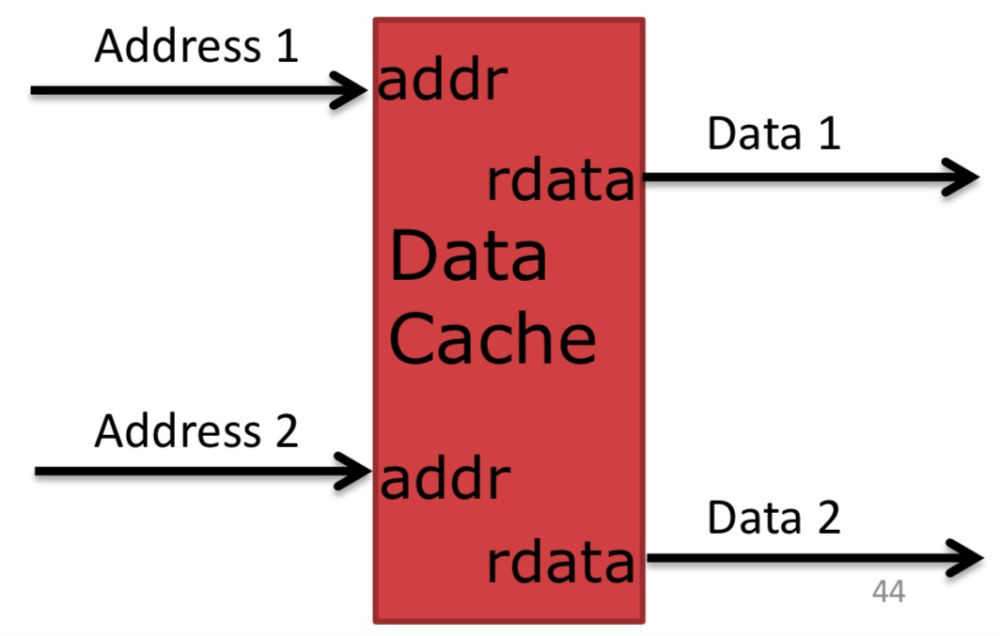

We elaborate the cache chapter by answering following questions? ## Where To Place A Block? (Block Placement) Types of cache organization:
- Direct mapped: each block has only one place it can appear in the cache.
(Block address) MOD (Number of block in cache) - Fully associative: if a block can be placed anywhere in the cache.
- N-way set associative: if a block can be placed in a restricted set of places in the cache. Each set consists of N blocks. A block is first mapped onto a set, and then can be placed anywhere in that set. The mapping of set choice is:
(Block address) MOD (Number of sets in cache) Which Block To Be Replaced When Cache Miss Happens? (Block Replacement Strategy)
- Random: actually, it is not that bad
- Least Recently Used(LRU): it is used to keep temperoral
- First In, First Out (FIFO):
- Not Most Recently Used(NMRU):
Cache Miss
We know that: Average Memory Access Time = Hit Time + (Miss Rate * Miss Penalty)
For the cache misses, there are mainly three types of cache misses: 1. Compulsory: first reference to a block, since this blook has not been seen in cache. 2. Capacity: the capacity of cache is too small to hold all the data needed. 3. Conflict: this occurs because of collisioins such as one cache line A kick out certain data before cache line B can read this data in.
Okay, how to reduce Miss Rate: 1. Large block size: 2. Large cache size: Empirical rule of thumb: if cache size is doubled, miss rate drop by about \(\sqrt{2}\) 3. High associativity: also empirical rule of thumb: direct-mapped cache of size N has about the same miss rate as a two-way set-associative cache of size N/2.
What happens On A Write? (Write Strategy)
There are two basic write policies: 1. Write-through: the results information is written to both cache and memory. 2. Write-back: the results information is written to only cache. The modified cache block is writen to main memory only when it is replaced.
Advanced Optimizations of Cache Performance
Cache Pipelining
The cache hit contains three steps: 1. Address the tag memory using the index portion of the address. 2. Compare the read tag value to the address. 3. Set the multiplexor to choose the correct data item if the cache is set associative.
Piplelining Cache Writes
Problem: Write takes two cycles in memory stage, one cycle for tag check and one cycle for data write if hit. Solutions: 1. Pipeline write: hold write data for store in single buffer ahead of cache, write cache data during next store's tag check. 2. Fully-associative caches: word line only enabled if hit. 3. Design data RAM that can perform read and write concurrently, restore old value after tag miss.
Write Buffer to Reduce Read Miss Penalty
Processor is not stalled on writes, and read misses can go ahead of write to main memory. The Resulted Problem: Write buffer may hold updated value of location needed by a read miss.
A Simple Solution: on a read miss, wait for the write buffer to go empty.
Faster Scheme: Check write buffer addresses against read miss addresses, if no match, the read miss go ahead of writes. If there is some matches, return the value in write buffer.
Multilevel Caches
Problem: A memory cannot be both large and fast.
Solution: Increasing sizes of cache each level. Multi-level Caches
Introduce some nomenclature 1. Local miss rate: misses in cache / accesses to cache 2. Global miss rate = misses in cache / CPU memory accesses 3. Misses per instruction = misses in caches / number instructions
Presence of L2 influences L1 design
- Use smaller L1 if there is also L2
- Trade: [increased L1 miss rate] and [reduced L1 hit time] and [reduced L1 miss penalty]
- Reduces average access energy
- Use simpler write-through L1 with on-chip L2: your design of L1 can be much simpler.
- Write-back L2 cache absorbs write traffic, doesn't go off-chip.
- At most one L1 miss request per L1 access.
- Simplifies coherence issues: By the way, what's cache coherence.
- Simplifies error recovery
Inclusion Policy
Now we have multi-levels caches 1. Inclusive multilevel cache: L1 cache 的内容一定需要在L2 中 + Inner cache holds copies of data in outer cache + External coherence snoop access only need to check outer cache 2. Exclusive multilevel caches: L1 的内容不能在 L2 中, More storage + Inner cache may hold data not in outer cache + Swap lines between inner/outer caches on miss + Used in AMD Athlon with 64KB primary and 256KB secondary caches.
Victim Caches
Victim is a cache line which has been evicted from your caches. It is the small fully associative cache for recently evicted lines, which is usually small(4-16 blocks).
Give an instance: 1
2
3
4
5
6int a[1M];
int b[1M];
int c[1M];
for (i = 0; i < 100; i++) {
c[i] = a[i] + b[i]
}
But there is only two-way set of assocaitive cache. So there are only two sets per index. So, a, b, c are always selected and then discarded.
Victim cache can reduce conflict misses and can be checked in parallel or series with main cache.
Prefetching
Basic of Prefetching
- Speculate on future instruction and data accesses and fetch them into caches. In fact, instructions accesses are always easier to predict than data accesses.
- Varieties of prefetching:
- hardware prefetching
- software prefetching
- mixed schemes
To better illustate prefetching, give a figure about data prefetching: Data prefetching
What types of miss does prefetching affect?
Issues in Prefetching
- Usefulness: prefetching should produce hits.
- Timeliness: prefetching should not be too late or too early.
- Cache and bandwidth pollution:
Hardware Instruction Prefetching
- Fetch two blocks on a miss: the requested block i and the next consecutive block.
- The requested block is placed in cache while the next block(i+1) is placed in instruction stream buffer.
- If miss in cache but hit in stream buffer, move stream buffer block into cache and prefetch next block(i=2)
 Hardware instruction prefetching
Hardware instruction prefetching
Hardware Data Prefetching
- Prefetch-on-miss: prefetch (b + 1) upon miss on b.
- One block lookahead(OBL) scheme: Initiate prefetch for block (b + 1) when block b is accessed.
- Strided prefetch: If observe sequence of accesses to blcok b, b + N, b + 2N, then prefetch b + 3N
Software Prefetching Issues
Timing is the biggest issue, not predictability
- If prefetch very close to when the data is requested, it may be too late.
- Prefetching too early causes pollution.
- Estimate how long it will take
Multiporting and Banking: Increasing Cache Bandwidth
True Multiport Caches
Show the model structure of multiport caches: Multiport caches Multiport caches can be quite expensive since it need to add new ports.
Psesudo Multiport Caches: Banked Caches
Bank caches means that address space is divided into multiple banks. See in the picture:
Benefits: + Higher throughput Challenges: + Bank conflicts + Extra wiring + Uneven utilization
Non-Blocking Caches
D-cache miss 时候: 仍然可以执行后续load/store指令,这种设计方法称之为 Non-blocking Cache, 发生miss 后, 需要将目的寄存器状态标记为 non-available, 还需要将导致 D-cache miss 的load/store 指令保存起来,这个部件为MSHR (Miss Status Handling Register). 可以认为是 Hit under Miss 机制. ### Basic Knowledge 1.What's is non-blocking caches? Non-blocking cache enables subsequent cache accesses after a cache miss has occured. + Hit-under-miss + Miss-under-miss (concurrent misses)
- Non-blocking challenges:
- Maintain order when multiple misses that might return out of order
- Load or store to an already pending miss address
Non-Blocking Cache Timeline and MSHR
Non-blocking Cache Operation
- When cache miss:
- Check MSHR for matched address:
- (1). If found: allocate new Load/Store entry pointing to MSHR.
- (2). If not found: allocate new MSHR entry .
- (3). If all entries full in MSHR or Load/Store entry table, stall or prevent new LDs/STs.
- When data is returned from memory:
- Find Load or Store waiting for it:
- (1). Forward load data to processor/clear store buffer.
- (2). Could be multiple Loads and Stores.
- Write data to cache
- When cache line is completely returned:
- De-allocate MSHR entry.
Critical Word First and Early Restart
This type of technique is based on the observation that
Software Memory Optimization
Cache Optimizations
- Restructuring code affects the data block access sequence.
- Prevent data from entering the cache.
- Kill data that will never be used again: if you only need to use certain data only once, you may not pull the data into your cache since it's a waste.
- Lop Interchange: spatial locality
1
2
3
4
5for (i = 0; i < 100; i++) {
for (j=0; j < 100; j++) {
x[i, j] = 2 * x[i, j]
}
}
1 | for (j = 0; j < 100; i++) { |
- Loop Fusion: temporal locality
1
2
3
4
5
6for (i = 0; i < N; i++) {
a[i] = b[i] * c[i];
}
for (i = 0; i < N; i++) {
d[i] = a[i] * c[i];
}
1 | for (i = 0; i < N; i++) { |
- Matrix Multiply: with Cache Tiling/Blocking